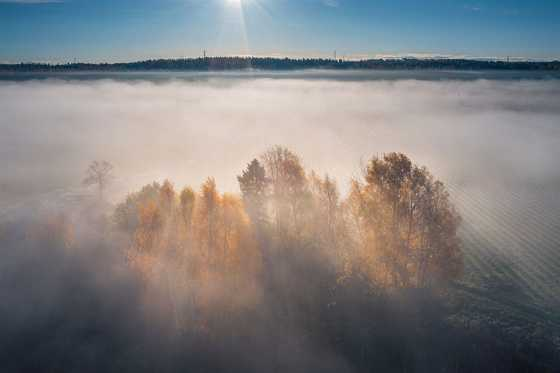
ABOUT
お店のこと
きりや珈琲は、岐阜県関市倉知にある古民家の喫茶店です。Instagramでは「ばぁばが作るモーニングのお店」「ゆるりと営業している喫茶店」と紹介されています。
朝9時から13時(ラストオーダー12時半)の営業で、モーニングが主役。手作りの朝ごはんと一杯のコーヒーで、ゆっくり過ごすためのお店です。
営業日は不定休のため、Instagramのカレンダーでご確認ください。「きりや」という店名の意味は確認できていません。

MORNING
モーニングとコーヒー
ばぁばの手作りモーニングが中心です。内容の詳細・価格は準備中です。
モーニング
手作りの朝ごはん。内容は準備中
コーヒー
珈琲と喫茶のひととき。種類は準備中
価格
準備中

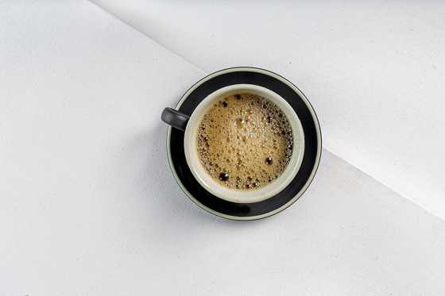
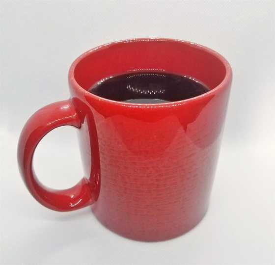
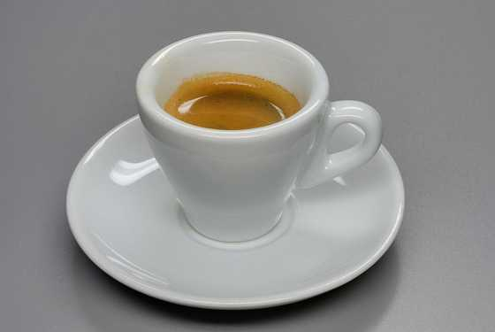
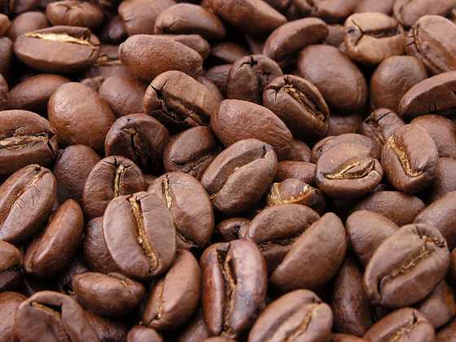
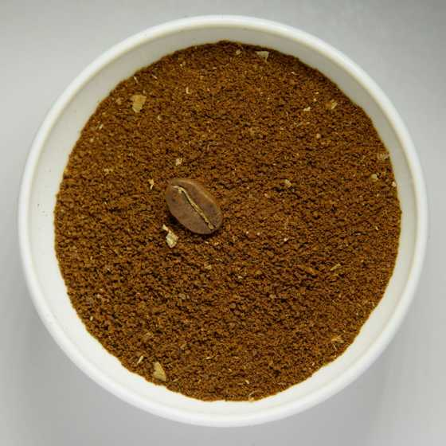
VOICE
口コミ イメージ例
以下は制作側が作成したイメージで、実際のお客様の声ではありません。
イメージ例
朝の静かな時間に、あたたかいトーストとコーヒーでほっとしました。
イメージ例
古民家の落ち着いた雰囲気で、ついゆっくりしてしまいます。
イメージ例
手作りの朝ごはんがやさしい味でした。また朝に寄りたいです。
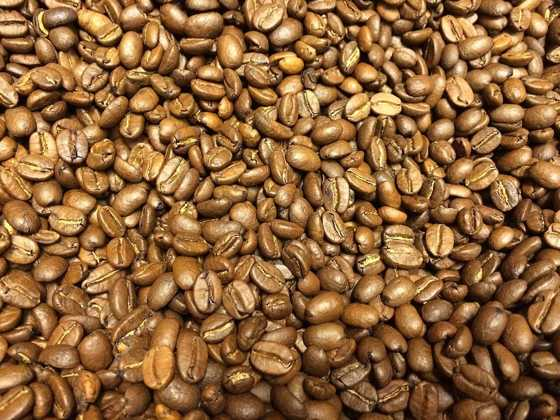
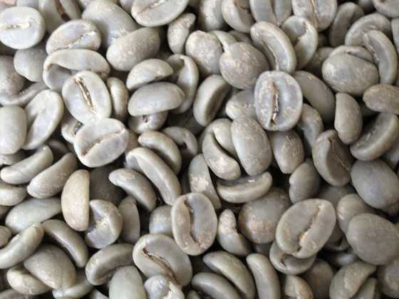
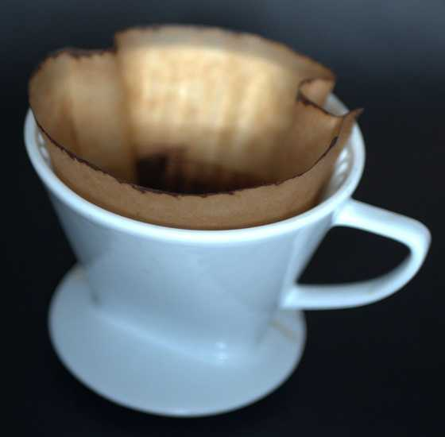
MORNING MIST
朝霧のころに
山あいの朝には霧が立つことも、というのは制作側のイメージです。霧の朝にも似合う一杯、という雰囲気で写真を選びました。
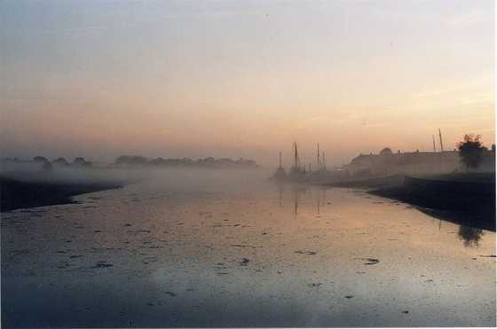
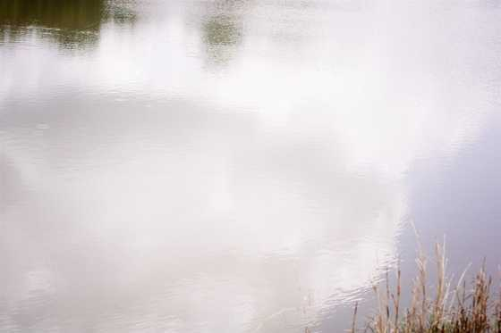
ACCESS
アクセス
- 住所
- 〒501-3936 岐阜県関市倉知4421
- 電話
- 準備中
- 営業時間
- 準備中
- 定休日
- 準備中
- 駐車場
- 案内あり(詳細はInstagramのハイライトをご覧ください)
- @kiriya.coffee